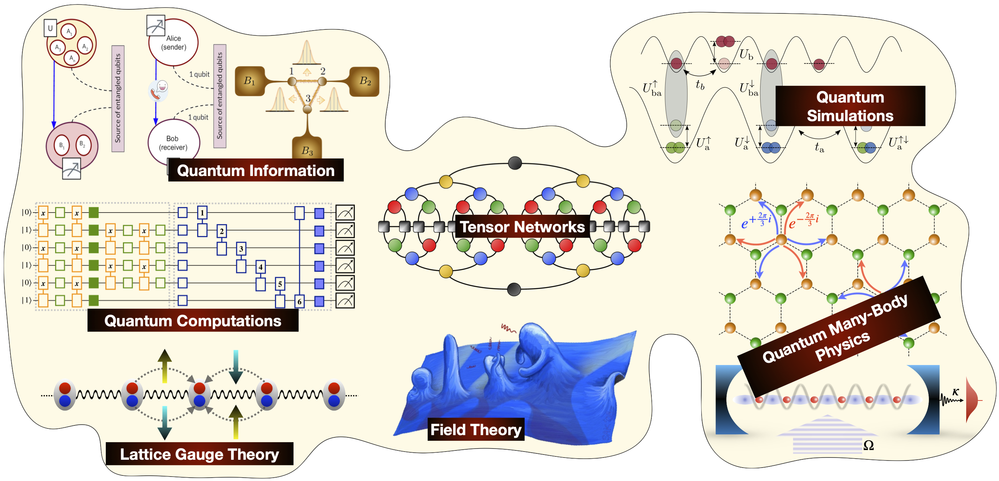

Research
Quantum many-body physics, quantum simulation and quantum information

When many quantum particles interact strongly, they no longer behave as independent individuals. Electrons in a solid, ultracold atoms held in a crystal of laser light, or atoms coupled to light in an optical cavity can act collectively, giving rise to new phases of matter, unusual phase transitions and intricate patterns of quantum entanglement. Understanding such collective quantum behavior is the central goal of our research.
We pursue this goal from several directions. We study how quantum matter organizes itself at low temperatures, with a particular interest in unconventional phase transitions and topological phases. We explore lattice gauge theories, the framework that particle physicists use to describe the fundamental forces, in forms that can be realized in the laboratory. We ask how matter changes when it interacts strongly with light confined in an optical cavity. We also study quantum systems out of equilibrium, asking whether, how and how fast they thermalize and lose memory of their initial state.
A common thread is quantum simulation. Experiments with ultracold atoms, Rydberg atoms, trapped ions and optical cavities now make it possible to engineer many-body systems almost at will and to observe them particle by particle. Our aim is to identify the physics these platforms can reveal and to provide the theory needed to understand it. To this end, we combine field-theoretical methods with large-scale tensor network simulations, and we use concepts from quantum information to characterize the resulting states.
Tensor Networks
The quantum state of many particles is far too large to store directly. Tensor networks capture its essential structure in a compact form, giving access to ground states, excitations and the time evolution of large systems.
Quantum Field Theory
At long distances, the microscopic details of a lattice model wash out and a simpler field theory takes over. This perspective explains why certain phases and transitions occur and tells us where to look in the simulations.
Quantum Information
Entanglement and related measures reveal structure that conventional observables can miss. They help us detect phases, pinpoint transitions and quantify how quantum a state really is.
Current Research Topics
Quantum Simulations with Synthetic Quantum Systems
Atoms in optical lattices, Rydberg atoms and dipolar gases can be engineered to interact in ways rarely found in natural materials, for instance over long distances or through tunneling that depends on the occupation of neighboring sites. We map out the behavior of such systems for realistic experimental parameters, so that experimentalists know what to look for and how to recognize it.
Tensor Network Algorithms
Tensor networks are the workhorse of our numerics. We use them for ground states, excitations and long-time dynamics, extend them to new settings such as gauge theories and light-matter systems, and test competing algorithms against each other to learn where each can be trusted. Our open-source library TenNetLib.jl grew out of this effort.
Critical Phenomena
At a continuous phase transition, the collective behavior of a system changes qualitatively, and its properties become universal, independent of microscopic details. We are particularly interested in transitions beyond the textbook picture, for example where symmetries absent in the microscopic model emerge at long distances, or where two incompatible kinds of order meet at a single continuous transition. We study them in one-dimensional chains, ladders and two-dimensional models.
Lattice Gauge Theories
Gauge theories describe the fundamental forces of nature, from electromagnetism to the strong force that binds quarks. Formulated on a lattice, they become accessible to computers and to quantum simulators. We study how charges become confined, how gauge theories evolve after a sudden quench, and what changes when the matter is bosonic, as is natural in cold-atom experiments.
Topological Order
Some phases of matter cannot be distinguished by any local order parameter. Their identity is encoded globally and shows up in robust edge states, or in excitations that carry a fraction of an electron’s charge. We look for such phases in models that synthetic quantum systems can realize, from fractional quantum Hall states to quantum spin liquids.
Cavity Control of Many-Body Systems
Between two mirrors, light and matter can interact so strongly that they lose their separate identities. We study how this coupling reshapes the phases of matter, which hybrid excitations of light and matter emerge, and how the light itself can reveal what is happening inside the material.
Out-of-Equilibrium Phenomena
Synthetic quantum systems are ideal for observing quantum dynamics in real time. We study how many-body systems respond when their parameters are changed suddenly or slowly, how phase transitions leave their fingerprints in the dynamics, and how such dynamics might be put to work in quantum devices, for example to charge a quantum battery faster.
Many-Body Localization and Disordered Systems
Isolated quantum systems usually thermalize and forget their initial state, but disorder or strong external fields can prevent this. Using simulations of large systems, we study when such localization sets in, how it differs between random disorder and disorder-free potentials such as a tilt or a harmonic trap, and how localized and thermal regions can coexist.
Quantum Information Theory
Quantum information offers both questions and tools. In many-body systems, we study entanglement and quantum magic, a resource that quantum computers need in order to outperform classical ones, and we propose ways to measure them in experiments. Earlier work explored how quantum correlations survive noise and how they can be shared among many parties.
Collaborations
Our research benefits from long-standing collaborations with researchers across the globe. Some of the major institutional collaborations include:
Selected Publications
-
Two-Dimensional J1-J2 Clock Model: Enhanced Symmetries, Emergent Orders, and Landau-Incompatible TransitionsPulloor Kuttanikkad Vishnu, Abhishodh Prakash, Rajesh Narayanan, and Titas Chanda
-
Chiral graviton modes on the latticeHernan B. Xavier, Zeno Bacciconi, Titas Chanda, Dam Thanh Son, and Marcello Dalmonte
-
Theory of fractional quantum Hall liquids coupled to quantum light and emergent graviton-polaritonsZeno Bacciconi, Hernan B. Xavier, Iacopo Carusotto, Titas Chanda, and Marcello Dalmonte
-
Many-Body Magic Via Pauli-Markov Chains—From Criticality to Gauge TheoriesPoetri Sonya Tarabunga, Emanuele Tirrito, Titas Chanda, and Marcello Dalmonte
-
Phase diagram of Rydberg-dressed atoms on two-leg square ladders: Coupling supersymmetric conformal field theories on the latticeMikheil Tsitsishvili, Titas Chanda, Matteo Votto, Pierre Fromholz, Marcello Dalmonte, and Alexander Nersesyan
-
Phase Diagram of 1+1D Abelian-Higgs Model and Its Critical PointTitas Chanda, Maciej Lewenstein, Jakub Zakrzewski, and Luca Tagliacozzo
-
Confinement and lack of thermalization after quenches in the bosonic Schwinger modelTitas Chanda, Jakub Zakrzewski, Maciej Lewenstein, and Luca Tagliacozzo
Selected Talks
-
"Emergence in a classical frustrated system: Symmetry, order, and deconfined classical criticality"at the Susegad Symposium on Quantum Dynamics and Thermalization (SSQDT), BITS Pilani, Goa Campus, India – Feb. 2026 at the Advanced School and Conference on Quantum Matter, the Abdus Salam International Centre for Theoretical Physics (ICTP), Trieste, Italy – Dec. 2025
-
"Matrix-Product States for Quantum Many-Body Systems"at the Asian Network School and Workshop on Complex Condensed Matter Systems 2024, Bangkok, Thailand – Nov. 2024
-
"Cavity control of quantum many-body systems: From topology to photon condensation"at the Department of Physics, IIT Bombay, India – Jan. 2024
-
"Quantifying quantum magic in many-body systems"at QIPA-2023, Harish-Chandra Research Institute (HRI), Prayagraj, India – Dec. 2023
-
"Emerging non-Abelian SU(2) symmetry in Rydberg quantum simulators"at Emerging Topics in Quantum Technology (ETQT-2023), IIT Palakkad, India – Nov. 2023
-
"Entanglement and photon condensation in cavity QED many-body systems"at the 9th Trieste-Ljubljana-Zagreb Meeting, Ljubljana, Slovenia – Mar. 2023
-
"Critical light-matter entanglement at cavity mediated phase transition"at Shedding Quantum Light on Strongly Correlated Materials (QLCM22), Max Planck Institute for the Physics of Complex Systems (MPI-PKS), Dresden, Germany – Aug. 2022
-
"Quantized bubble nucleation"at the Department of Theoretical Physics, Jožef Stefan Institute, Ljubljana, Slovenia – Jan. 2022 at the Department of Atomic Optics, Jagiellonian University, Kraków, Poland – Oct. 2021
-
"Bosonic Peierls transition in cold-atomic simulators"at the Abdus Salam International Centre for Theoretical Physics (ICTP), Trieste, Italy – Feb. 2021 at the Center for Theoretical Physics of the Polish Academy of Sciences (CFT PAN), Warsaw, Poland – Nov. 2020
-
"Lattice gauge theories in the age of quantum technologies: Bosonic Schwinger model out of equilibrium"at the Particle Physics Phenomenology and Experiments Seminar, Jagiellonian University, Kraków, Poland – Jul. 2021 at IIT Bombay, Mumbai, India – Jul. 2020
-
"Generation and Preservation of Entanglement in Quantum Spin Models"at the Department of Atomic Optics, Jagiellonian University, Kraków, Poland – Dec. 2018 at the Quantum Optics Theory Group, ICFO-Institut de Ciències Fotòniques, Barcelona, Spain – Nov. 2018
-
"Deterministic Quantum Dense Coding Networks"at the Institute for Quantum Computing, University of Waterloo, Canada – Mar. 2018
-
"Frozen Quantum Correlations"at the Advanced School and Workshop on Quantum Science and Quantum Technologies, the Abdus Salam International Centre for Theoretical Physics (ICTP), Trieste, Italy – Sep. 2017